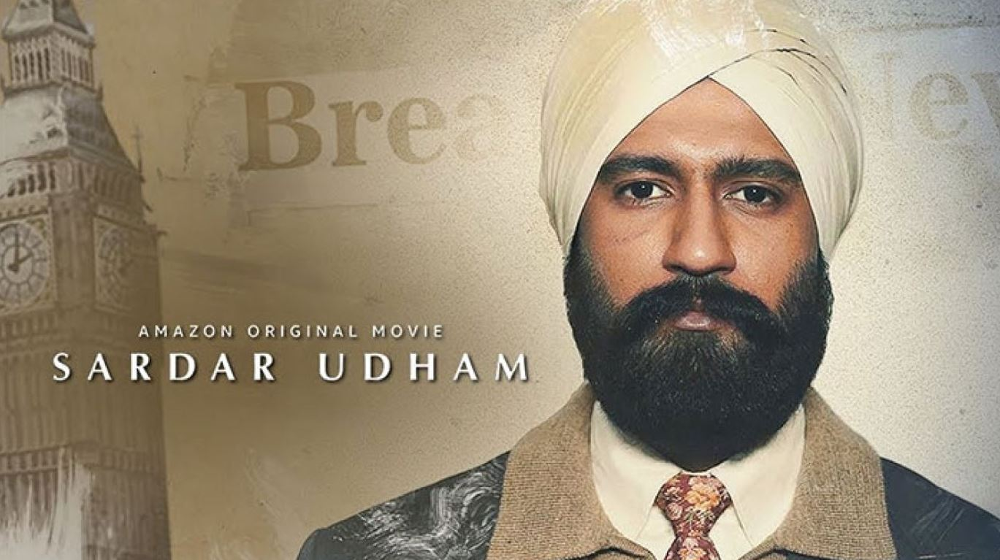

Sardar Udham(2021).(2h42m)
Rating
Rating ★ 8.4The film follows a non-linear narrative, going back and forth from the present, where Sardar
Udham Singh is in London, to his past when he was part of the Hindustan Socialist Republican
Association (HSRA) and explores his reasons for assassinating Indian Civil Service officer
Michael O'Dwyer. Udham (known as Sher Singh) is released from prison at Punjab in British India.
He is constantly being watched by the colonial authorities. He leaves India and goes to the USSR
during what appears to be winter. From there, he makes his way to London by ship. Even though
the British authorities are on the lookout for him, he successfully evades them and lives in
London, making a living as a salesman and then a welder. He is shown in front of Caxton Hall,
making his way inside where O'Dwyer is giving a speech on his time as Lt. Governor of Punjab and
how he had suppressed a major uprising. Udham makes his way to O'Dwyer and shoots him, and is
arrested.
Udham is appointed a lawyer who slowly gets Udham to tell his backstory. Udham is brought to
court and in spite of a good lawyer, the judges sentence him to death. Upon hearing this, Udham
makes an impromptu speech where he denounces British rule in India and reaffirms his support for
the Indian freedom movement. Udham protests the conditions of his detention and goes on a 42-day
fast, but is force-fed to break it. He slowly opens up to the investigating inspector and tells
him the reasons for the assassination. Udham also got the title of Shaheed-E-Azam.
In 1919, Udham is a young adult working in a textile mill near Amritsar, with a girlfriend who
is mute. On 13 April 1919, in favour of O'Dwyer, General Dyer opens fire on a crowd of 20,000
peaceful protestors inside Jallianwala Bagh. Udham is sleeping unaware of the massacre, until
his friend wakes him up, mortally wounded and bleeding profusely. He hears about the massacre
and rushes to the grounds to help. It is shown that along with a few other volunteers, Udham
finds survivors and gets them to a makeshift hospital which is overwhelmed itself. He is later
executed and shown to have a photo of Bhagat Singh, taken when Bhagat was in prison during his
final days.
After the independence of India, Udham's ashes are brought to the country upon the request of
Punjab Chief Minister Giani Zail Singh, and were immersed in the Sutlej river. His ashes were
immersed in the same place as his idol, Bhagat. In the final scene, Dyer and O'Dwyer give their
own accounts to the Hunter Commission.
Director:Shoojit Sircar
Writer:Ritesh Shah & Shubhendu Bhattacharya
Stars: Vicky Kaushal,Kirsty Averton,Banita Sandhu,Amol Parashar,Shaun Scott,Sam Retford.
STREAMING
User Feedback:
User Rating:
★
★
★
★
★
★